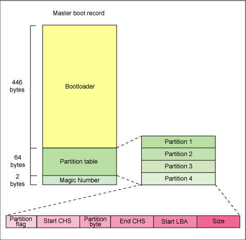
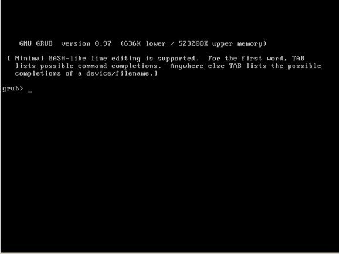
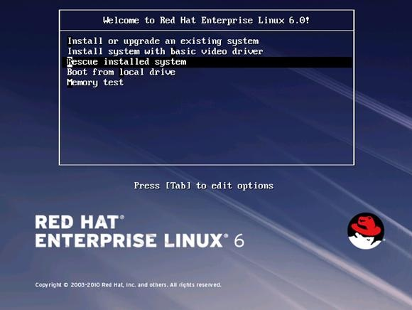
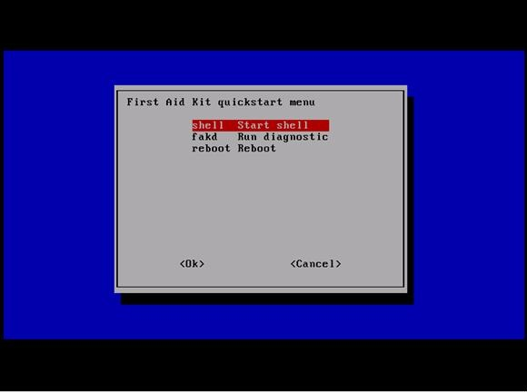
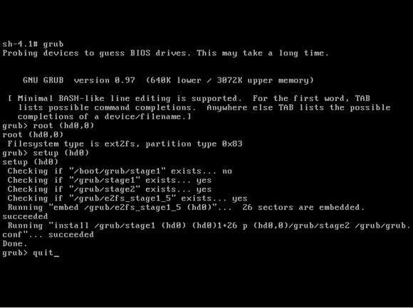
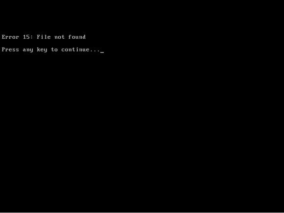
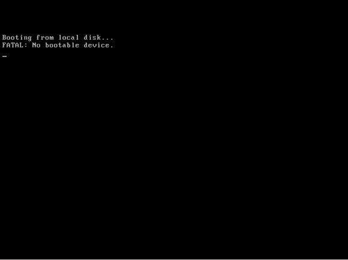
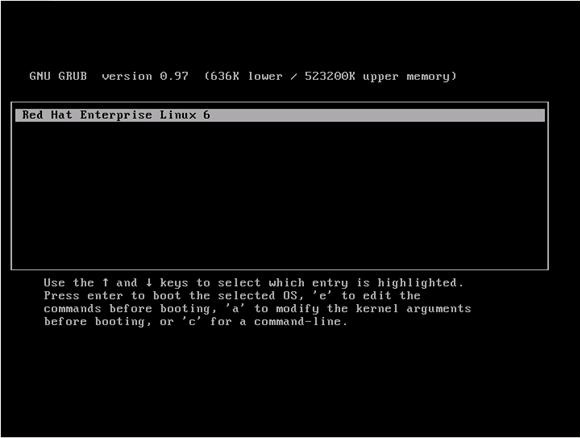
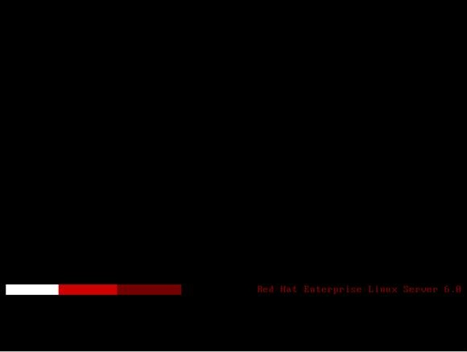

Linux 发行版本众多，现如今也得到了越来越广泛的应用，同时也面临着系统出现故障的潜在风险，本文将以发行版本 RHEL6 为例详细介绍几种 Linux 灾难恢复技术和方法，以确保 Linux 系统的安全恢复。
在介绍 Linux 灾难恢复方法之前，我们先来了解下 MBR，其全称为 Master Boot Record，即硬盘的主引导记录。它由三个部分组成，主引导程序、硬盘分区表和硬盘有效标志。在总共 512 字节的主引导扇区里主引导程序（Bootloader）占 446 个字节，第二部分是硬盘分区表，占 64 个字节，硬盘有多少分区以及每一分区的大小都记录在其中。第三部分是硬盘有效标志，占 2 个字节。具体如图示：
图 1. MBR

系统硬盘分区表破坏
生产环境中的 Linux 服务器可能会因为病毒或者意外断电而引起硬盘分区表被破坏，通常恢复硬盘分区表需要之前我们先备份其分区表的信息，一般我们使用 USB 外接设备来备份主机硬盘的分区表。
在主机上挂载 USB 设备后我们查看系统当前磁盘设备：
- [root@FCoE ~]# fdisk -l
-
- Disk /dev/sda: 43.0 GB, 42991616000 bytes
- 255 heads, 63 sectors/track, 5226 cylinders
- Units = cylinders of 16065 * 512 = 8225280 bytes
- Sector size (logical/physical): 512 bytes / 512 bytes
- I/O size (minimum/optimal): 512 bytes / 512 bytes
- Disk identifier: 0x00032735
-
- Device Boot Start End Blocks Id System
- /dev/sda1 * 1 17 131072 83 Linux
- Partition 1 does not end on cylinder boundary.
- /dev/sda2 17 147 1048576 82 Linux swap / Solaris
- Partition 2 does not end on cylinder boundary.
- /dev/sda3 147 5227 40803328 83 Linux
-
- Disk /dev/sdb: 2147 MB, 2147483648 bytes
- 255 heads, 63 sectors/track, 261 cylinders
- Units = cylinders of 16065 * 512 = 8225280 bytes
- Sector size (logical/physical): 512 bytes / 512 bytes
- I/O size (minimum/optimal): 512 bytes / 512 bytes
- Disk identifier: 0x00000000
-
- Disk /dev/sdb doesn't contain a valid partition table
现在我们在 sdb 这个设备上创建一个新的分区：
- [root@FCoE ~]# fdisk /dev/sdb
- Device contains neither a valid DOS partition table, nor Sun, SGI or OSF disklabel
- Building a new DOS disklabel with disk identifier 0xcdd48395.
- Changes will remain in memory only, until you decide to write them.
- After that, of course, the previous content won't be recoverable.
-
- Warning: invalid flag 0x0000 of partition table 4 will be corrected by w(rite)
-
- WARNING: DOS-compatible mode is deprecated. It's strongly recommended to
- switch off the mode (command 'c') and change display units to
- sectors (command 'u').
-
- Command (m for help): n
- Command action
- e extended
- p primary partition (1-4)
- p
- Partition number (1-4): 1
- First cylinder (1-261, default 1):
- Using default value 1
- Last cylinder, +cylinders or +size{K,M,G} (1-261, default 261):
- Using default value 261
-
- Command (m for help): p
-
- Disk /dev/sdb: 2147 MB, 2147483648 bytes
- 255 heads, 63 sectors/track, 261 cylinders
- Units = cylinders of 16065 * 512 = 8225280 bytes
- Sector size (logical/physical): 512 bytes / 512 bytes
- I/O size (minimum/optimal): 512 bytes / 512 bytes
- Disk identifier: 0xcdd48395
-
- Device Boot Start End Blocks Id System
- /dev/sdb1 1 261 2096451 83 Linux
-
- Command (m for help): w
- The partition table has been altered!
-
- Calling ioctl() to re-read partition table.
- Syncing disks.
在新分区 sdb1 上创建文件系统：
- [root@FCoE ~]# mkfs.ext3 /dev/sdb1
- mke2fs 1.41.12 (17-May-2010)
- Filesystem label=
- OS type: Linux
- Block size=4096 (log=2)
- Fragment size=4096 (log=2)
- Stride=0 blocks, Stripe width=0 blocks
- 131072 inodes, 524112 blocks
- 26205 blocks (5.00%) reserved for the super user
- First data block=0
- Maximum filesystem blocks=536870912
- 16 block groups
- 32768 blocks per group, 32768 fragments per group
- 8192 inodes per group
- Superblock backups stored on blocks:
- 32768, 98304, 163840, 229376, 294912
-
- Writing inode tables: done
- Creating journal (8192 blocks): done
- Writing superblocks and filesystem accounting information: done
-
- This filesystem will be automatically checked every 24 mounts or
- 180 days, whichever comes first. Use tune2fs -c or -i to override.
挂载新的文件系统：
- [root@FCoE ~]# mount /dev/sdb1 /mnt/
通常我们通过备份硬盘的 MBR 来备份硬盘分区表：
- [root@FCoE ~]# dd if=/dev/sda of=/mnt/sda.mbr bs=512 count=1
- 1+0 records in
- 1+0 records out
- 512 bytes (512 B) copied, 0.000777948 s, 658 kB/s
现在我们来写零硬盘分区表来实现类似分区表被破坏的结果：
- [root@FCoE ~]# dd if=/dev/zero of=/dev/sda bs=1 count=64 skip=446 seek=446
- 64+0 records in
- 64+0 records out
- 64 bytes (64 B) copied, 0.00160668 s, 39.8 kB/s
查询硬盘 sda 上的分区信息，发现其已不包含任何分区：
- [root@FCoE ~]# fdisk -l
-
- Disk /dev/sda: 43.0 GB, 42991616000 bytes
- 255 heads, 63 sectors/track, 5226 cylinders
- Units = cylinders of 16065 * 512 = 8225280 bytes
- Sector size (logical/physical): 512 bytes / 512 bytes
- I/O size (minimum/optimal): 512 bytes / 512 bytes
- Disk identifier: 0x00032735
-
- Device Boot Start End Blocks Id System
-
- Disk /dev/sdb: 2147 MB, 2147483648 bytes
- 255 heads, 63 sectors/track, 261 cylinders
- Units = cylinders of 16065 * 512 = 8225280 bytes
- Sector size (logical/physical): 512 bytes / 512 bytes
- I/O size (minimum/optimal): 512 bytes / 512 bytes
- Disk identifier: 0xcdd48395
-
- Device Boot Start End Blocks Id System
- /dev/sdb1 1 261 2096451 83 Linux
当主机硬盘分区表丢失了之后，再次启动后 GRUB 会因找不到配置文件而进入命令行模式：
图 2. 分区表丢失

接下来我们挂载 RHEL6 的安装盘，同时也接入我们之前备份的 USB 设备，然后重启主机，选择 CD-ROM 为第一引导设备，启动后选择“Rescue installed system”。
图 3. 选择援救

按照提示，最终我们选择一个 shell。
图 4. 选择 shell

我们查询系统磁盘信息，发现硬盘设备 sda 没有包含任何分区。
- bash-4.1# fdik – l
-
- Disk /dev/sda: 43.0 GB, 42991616000 bytes
- 255 heads, 63 sectors/track, 5226 cylinders
- Units = cylinders of 16065 * 512 = 8225280 bytes
- Sector size (logical/physical): 512 bytes / 512 bytes
- I/O size (minimum/optimal): 512 bytes / 512 bytes
- Disk identifier: 0x00032735
-
- Device Boot Start End Blocks Id System
-
- Disk /dev/sdb: 2147 MB, 2147483648 bytes
- 255 heads, 63 sectors/track, 261 cylinders
- Units = cylinders of 16065 * 512 = 8225280 bytes
- Sector size (logical/physical): 512 bytes / 512 bytes
- I/O size (minimum/optimal): 512 bytes / 512 bytes
- Disk identifier: 0xcdd48395
-
- Device Boot Start End Blocks Id System
- /dev/sdb1 1 261 2096451 83 Linux
我们来恢复它的硬盘分区表，创建一个目录并且挂载之前备份的 USB 设备，我们看到它的设备名是 /dev/sdb。
- bash-4.1# mount /dev/sdb1 /usb
- bash-4.1# ls /usb
- lost+found sda.mbr
通过原来备份的 sda.mbr 文件来恢复硬盘设备 sda 的硬盘分区表：
- bash-4.1# dd if=/usb/sda.mbr of=/dev/sda bs=1 count=64 skip=446 seek=446
- 64+0 records in
- 64+0 records out
- 64 bytes (64 B) copied, 0.038358 s, 4.6 kB/s
再次查询系统磁盘信息：
- bash-4.1# fdisk -l
- Disk /dev/sda: 43.0 GB, 42991616000 bytes
- 255 heads, 63 sectors/track, 5226 cylinders
- Units = cylinders of 16065 * 512 = 8225280 bytes
- Sector size (logical/physical): 512 bytes / 512 bytes
- I/O size (minimum/optimal): 512 bytes / 512 bytes
- Disk identifier: 0x00032735
-
- Device Boot Start End Blocks Id System
- /dev/sda1 * 1 17 131072 83 Linux
- Partition 1 does not end on cylinder boundary.
- /dev/sda2 17 147 1048576 82 Linux swap / Solaris
- Partition 2 does not end on cylinder boundary.
- /dev/sda3 147 5227 40803328 83 Linux
-
- Disk /dev/sdb: 2147 MB, 2147483648 bytes
- 255 heads, 63 sectors/track, 261 cylinders
- Units = cylinders of 16065 * 512 = 8225280 bytes
- Sector size (logical/physical): 512 bytes / 512 bytes
- I/O size (minimum/optimal): 512 bytes / 512 bytes
- Disk identifier: 0xcdd48395
-
- Device Boot Start End Blocks Id System
- /dev/sdb1 1 261 2096451 83 Linux
硬盘设备 sda 的分区表已经恢复，重启后系统便可正常引导。
系统 GRUB 损坏
类似得我们可以来写零 Bootloader 来实现 GRUB 被破坏的结果：
- [root@FCoE grub]# dd if=/dev/zero of=/dev/sda bs=446 count=1
- 1+0 records in
- 1+0 records out
- 446 bytes (446 B) copied, 0.0017583 s, 254 kB/s
重启后系统会因找不到 GRUB 而卡在“Booting from Hard Disk …”
挂载系统安装光盘然后选择进入 Rescue 模式，然后恢复 GRUB：
- bash-4.1# chroot /mnt/sysimage
- sh-4.1# grub
- grub > root hd(0,0)
- grub > setup (hd0)
- grub > quit
图 5. 恢复 GRUB

重启主机后，系统可正常引导。
系统内核文件丢失
系统丢失内核 kernel 文件，再次启动后会提示找不到文件。
图 6. 内核丢失

挂载系统安装盘进入援救模式，检查 /boot 目录下发现没有 kernel 文件。
- bash-4.1# chroot /mnt/sysimage
- bash-4.1# ls /boot
- ls
- config-2.6.32-71.el6.x86_64 lost+found
- efi symvers-2.6.32-71.el6.x86_64.gz
- grub System.map-2.6.32-71.el6.x86_64
- initramfs-2.6.32-71.el6.x86_64.img
从挂载的系统安装盘强制重新安装内核：
- sh-4.1# mount – o loop /dev/sr0 /media
- sh-4.1# cd /media/Server/Packages
- sh-4.1# rpm -ivh --force kernel-2.6.32-71.el6.x86_64.rpm
- warning: kernel-2.6.32-71.el6.x86_64.rpm: Header V3 RSA/SHA256 Signature, \
- key ID fd431d51: NOKEY
- Preparing... ########################################### [100%]
- 1:kernel ########################################### [100%]
在 /boot 目录下已经生成新的 kernel 文件 vmlinuz-2.6.32-71.el6.x86_64
- sh-4.1## ls /boot
- config-2.6.32-71.el6.x86_64 lost+found
- efi symvers-2.6.32-71.el6.x86_64.gz
- grub System.map-2.6.32-71.el6.x86_64
- initramfs-2.6.32-71.el6.x86_64.img vmlinuz-2.6.32-71.el6.x86_64
重启主机后，系统可正常引导。
系统镜像文件丢失
系统丢失镜像文件，主机启动后黑屏。
图 7. 镜像丢失
挂载系统安装盘进入援救模式 , 检查 /boot 目录下发现没有镜像文件。
- bash-4.1# chroot /mnt/sysimage
- sh-4.1# ls /boot
- config-2.6.32-71.el6.x86_64 symvers-2.6.32-71.el6.x86_64.gz
- efi System.map-2.6.32-71.el6.x86_64
- grub vmlinuz-2.6.32-71.el6.x86_64
- lost+found
重新生成镜像文件 initramfs-2.6.32-71.el6.x86_64.img。
- sh-4.1# cd /boot
- sh-4.1# mkinit
- sh-4.1# ls
- config-2.6.32-71.el6.x86_64 lost+found
- efi symvers-2.6.32-71.el6.x86_64.gz
- grub System.map-2.6.32-71.el6.x86_64
- initramfs-2.6.32-71.el6.x86_64.img vmlinuz-2.6.32-71.el6.x86_64
重启主机后 , 系统可正常引导。
系统 /boot 分区损坏
一般来说系统 /boot 分区损坏，我们会先尝试修复文件系统。如果文件系统损坏不能修复，那么我们可以参照前述的方法来依次新建 /boot 分区，重新安装内核和镜像，然后安装 GURB 再手工编辑引导菜单，以最终来恢复系统可正常引导。通常我们需要按照如下的步骤来恢复。
创建分区
碰到比较严重的情况就是 /boot 分区已经完全损坏，启动时会提示找不到引导设备。
图 8. 引导分区损坏

挂载安装盘后进入援救模式，查看分区情况，发现分区 /dev/sda1 不存在。
- bash-4.1#
- Disk /dev/sda: 43.0 GB, 42991616000 bytes
- 255 heads, 63 sectors/track, 5226 cylinders
- Units = cylinders of 16065 * 512 = 8225280 bytes
- Sector size (logical/physical): 512 bytes / 512 bytes
- I/O size (minimum/optimal): 512 bytes / 512 bytes
- Disk identifier: 0x00000000
-
- Device Boot Start End Blocks Id System
- /dev/sda2 17 147 1048576 82 Linux swap / Solaris
- Partition 2 does not end on cylinder boundary.
- /dev/sda3 147 5227 40803328 83 Linux
-
- Disk /dev/sdb: 2147 MB, 2147483648 bytes
- 255 heads, 63 sectors/track, 261 cylinders
- Units = cylinders of 16065 * 512 = 8225280 bytes
- Sector size (logical/physical): 512 bytes / 512 bytes
- I/O size (minimum/optimal): 512 bytes / 512 bytes
- Disk identifier: 0xcdd48395
-
- Device Boot Start End Blocks Id System
- /dev/sdb1 1 261 2096451 83 Linux
新建一个分区并且设置它为启动分区。
- bash-4.1# fdisk /dev/sda
-
- WARNING: DOS-compatible mode is deprecated. It's strongly recommended to
- switch off the mode (command 'c') and change display units to
- sectors (command 'u').
-
- Command (m for help): n
- Command action
- e extended
- p primary partition (1-4)
- p
- Partition number (1-4): 1
- First cylinder (1-5226, default 1):
- Using default value 1
- Last cylinder, +cylinders or +size{K,M,G} (1-16, default 16):
- Using default value 16
-
- Command (m for help): a
- Partition number (1-4): 1
-
- Command (m for help): p
-
- Disk /dev/sda: 43.0 GB, 42991616000 bytes
- 255 heads, 63 sectors/track, 5226 cylinders
- Units = cylinders of 16065 * 512 = 8225280 bytes
- Sector size (logical/physical): 512 bytes / 512 bytes
- I/O size (minimum/optimal): 512 bytes / 512 bytes
- Disk identifier: 0x00000000
-
- Device Boot Start End Blocks Id System
- /dev/sda1 * 1 16 128488+ 83 Linux
- /dev/sda2 17 147 1048576 82 Linux swap / Solaris
- Partition 2 does not end on cylinder boundary.
- /dev/sda3 147 5227 40803328 83 Linux
-
- Command (m for help): w
- The partition table has been altered!
重启主机以更新分区表，然后进入援救模式，并在我们新创建的分区上创建文件系统。
- bash-4.1# mkfs.ext4 /dev/sda1
- Filesystem label=
- OS type: Linux
- Block size=1024 (log=0)
- Fragment size=1024 (log=0)
- Stride=0 blocks, Stripe width=0 blocks
- 32128 inodes, 128488 blocks
- 6424 blocks (5.00%) reserved for the super user
- First data block=1
- Maximum filesystem blocks=67371008
- 16 block groups
- 8192 blocks per group, 8192 fragments per group
- 2008 inodes per group
- Superblock backups stored on blocks:
- 8193, 24577, 40961, 57345, 73729
-
- Writing inode tables: done
- Creating journal (4096 blocks): done
- Writing superblocks and filesystem accounting information: done
-
- This filesystem will be automatically checked every 38 mounts or
- 180 days, whichever comes first. Use tune2fs -c or -i to override.
安装内核镜像文件
通过前述的方法我们安装内核和镜像文件。
- bash-4.1# chroot /mnt/sysimage
- sh-4.1# mount /dev/sda1 /boot
- sh-4.1# mount – o loop /dev/sr0 /media
- sh-4.1# cd /media/Server/Packages
- sh-4.1# rpm -ivh --force kernel-2.6.32-71.el6.x86_64.rpm
- warning: kernel-2.6.32-71.el6.x86_64.rpm: \
- Header V3 RSA/SHA256 Signature, key ID fd431d51: NOKEY
- Preparing... ########################################### [100%]
- 1:kernel ########################################### [100%]
安装 GRUB
我们安装 GRUB 到硬盘设备 sda 上。
- sh-4.1# grub-install /dev/sda
- Installation finished. No error reported.
- This is the contents of the device map /boot/grub/device.map.
- Check if this is correct or not. If any of the lines is incorrect,
- fix it and re-run the script `grub-install'.
-
- (fd0) /dev/fd0
- (hd0) /dev/sda
- (hd1) /dev/sdb
编辑引导菜单
由于我们创建了新的分区，其对应的 UUID 会发生变化，可以通过命令 blkid 来查询分区的 UUID。
- bash-4.1# blkid
- /dev/loop0: TYPE="squashfs"
- /dev/sda2: UUID="7b1e0fac-ff06-492c-848d-497e2a38c54e" TYPE="swap"
- /dev/sda3: UUID="ef89764e-04ff-4f26-ae82-dcab267ecc66" TYPE="ext4"
- /dev/sdb1: UUID="2b824352-df2a-44c6-a547-838d46f526fa" SEC_TYPE="ext2" TYPE="ext3"
- /dev/loop1: LABEL="RHEL_6.0 x86_64 Disc 1" TYPE="iso9660"
- /dev/sda1: UUID="cec964af-1618-48ff-ac33-4ef71b9d3265" TYPE="ext4"
上述的 sda3 为根分区，编辑 /boot/grub/grub.conf 文件更新其对应的 UUID，其内容如下。
- title Red Hat Enterprise Linux 6
- root (hd0,0)
- kernel /vmlinuz-2.6.32-71.el6.x86_64 \
- root=UUID=ef89764e-04ff-4f26-ae82-dcab267ecc66 rhgb quiet
- initrd /initramfs-2.6.32-71.el6.x86_64.img
更新 /etc/fstab
类似的我们也需要更新 /etc/fstab 里 /boot 分区对应的新 UUID，其内容如下。
- #
- # /etc/fstab
- # Created by anaconda on Sun Mar 18 04:35:07 2012
- #
- # Accessible filesystems, by reference, are maintained under '/dev/disk'
- # See man pages fstab(5), findfs(8), mount(8) and/or blkid(8) for more info
- #
- UUID=ef89764e-04ff-4f26-ae82-dcab267ecc66 / ext4 defaults 1 1
- UUID=cec964af-1618-48ff-ac33-4ef71b9d3265 /boot ext4 defaults 1 2
- UUID=7b1e0fac-ff06-492c-848d-497e2a38c54e swap swap defaults 0 0
- tmpfs /dev/shm tmpfs defaults 0 0
- devpts /dev/pts devpts gid=5,mode=620 0 0
- sysfs /sys sysfs defaults 0 0
- proc /proc proc defaults 0 0
现在我们的恢复步骤已经完成，重启主机后 GRUB 中可见我们配置的系统列表。
图 9. GRUB 菜单

至此 /boot 分区已恢复，系统可正常引导启动。
图 10. 系统启动

总结
本文阐述了常见的 Linux 灾难恢复技术和方法，及其出现严重灾难时应注意的恢复顺序，以确保 Linux 系统在出现灾难时得以安全恢复。